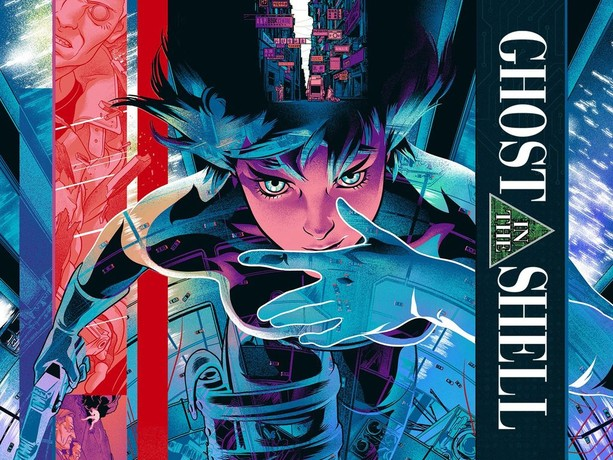
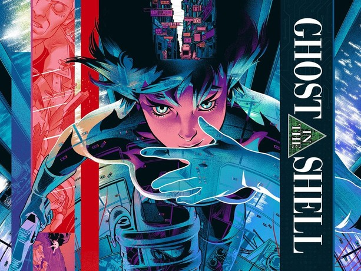

This is My Artist Archive
This is to archive my inspiration and process for my drawings
The biggest inspiration for me is movies and media. ever since i was a kid watching shows and movies really had an effect on me. it's hard to remember where it started but it was probably the transformers movies, lego and good old fashion rebellion, because i don't like being told what to do.
I always related to the punks of the world. probably because they were calling out sestemic problems that I didn't necessarily relate to but i did agree something needed to be done about it. whatever got me here be it my favourite movies, like blade runner 2049, ghost in the shell, or maybe it was the exitensial questions asked by these medias. maybe the question of what makes us truly human resonates with me, espescially because knowing what makes us who we are we can change for the better or the worse.
What I want to showcase in my drawings
My goal is to show this in a graphic novel i am currently writing and drawing using just pencil and microns. i want to keep most of my art to look affordable, not in quality, but in materials. I want to show anyone can draw, you just need a mark making tool and something that leaves a mark.
From here on I'll discuss my inspirations throughout the years starting with:
Movies
Blade Runner and it's sequal as well as Ghost in the Shell have been very inspirational for me. The reason has mostly to do with people in a system that beats them down, and tears them apart. Themes of loneliness, isolation, what it means to be human, are all reasons why I love these movies.
 

Video Games
I know there are many others but the one that I put the most time into was Cyberpunk 2077. Cyberpunk 2077 explores all the themes I love into one broken package. Corrupt corporations, governments, and even corruption on the surface level. It’s grime all the way down and I love it for that. With the fantastic worldbuilding of Mike Pondsmiths original TTRPG, combined with FPS mechanics makes Cyberpunk special to me.

Lego
I will never not love Lego. Lego has been my go to creative toy since the 90's. I think my favourite thing about Lego is how versitle those plastic bricks can be. Even Lego say's you don't need to follow the instructions, which is my favourite thing.
Social Media
I love social media for a lot of reasons. One, I like finding new artists I can relate to. Two, everything online is reactionary, whether that's good or bad is up to the individual. Most of my inspirations come from people I've seen online, from youtubers, to instagram, to twitter.


Rebellion
I have always hated being told what to do by people who think they know better. Phrases like "this is for your own good" or "It just has to be this way" is a sure fire way to make my blood boil. I don't need to exist for any reason, i am allowed to just be, i can just exist. All of the inspiration brought up on this website shows this and has a common through line. Even if i need to do something out of obligation, I will refuse to set time for it. Images below will show some artists i listen to that fit this concept.